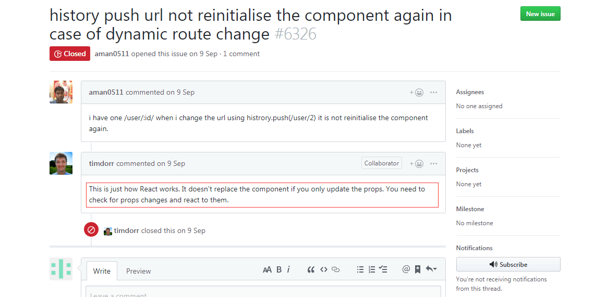

React路由的跳转的方法
React-Router 2.0.0 版本
import { browserHistory } from 'react-router'
browserHistory.push('/path')
React-Router 2.4.0版本以上
React-Router 2.4.0版本以上，可以通过mixin的方法，使组件增加this.router属性，然后进行相应的操作，具体mixin代码参考如下:
import { withRouter } from 'react-router';
clsss ABC extends Component {
}
module.exports = withRouter(ABC);
用过mixin的组件，会具有this.router的属性，只需要使用this.props.router.push('/path')就可以跳转到相应的路由
React-Router 3.0.0版本以上
3.0.0版本以后不需要再手动mixin相关的router属性，在任何需要跳转的组件中写this.props.router.push('/path')就可以跳转到响应的路由了。
React-Router 4.0版本以上
React-Router 4.0对路由进行了改进，router属性改为了history属性，使用方法还是和3.0差不多，任何需要跳转的地方使用this.props.history.push('/path')就可以进行跳转了
参数的获取
使用this.props.match.params.xxx可以获取到当前路由的参数
React子组件调用 this.props.history.push()发生报错的解决方案
父组件代码
render() {
return (
<div className="homePage">
<ChildComponent history ={this.props.history} />
</div>
)
this.props.history.push('/path') 无响应bug
此问题使用与url地址为 /xxx/xxx/:id id之间变化，页面无响应, 此时组件进行更新 shoudComponent函数会进行props与nextProps比较，当发现props没有更新数据无响应。 请看react-router-dom 里issue里开发者解答，如图:

解决办法：
//在事件函数内
this.props.history.push(`/record/hospital/${res.data.admissionId}`);
//周期函数内
shouldComponentUpdate(nextProps) {
let oOpts = JSON.stringify(this.props.match.params);
let nOpts = JSON.stringify(nextProps.match.params);
if(oOpts != nOpts) {
this.goFetch(nextProps.match.params.id); //dispatch请求, 会更新props
}
return true //此处为true, 未考虑到优化性能,仅解决路由push无响应问题
}